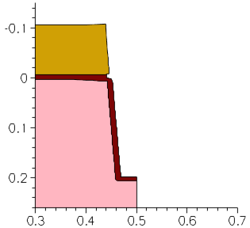

Sentaurus Process
8. Special Focus: Trench Etching
8.1 Overview
8.2 Initialization
8.3 Growing Pad Oxide
8.4 Depositing Nitride Layer
8.5 STI Lithography
8.6 Shallow Trench Etch
8.7 Growing Oxide Liner
8.8 Depositing and CMP of TEOS
8.9 Nitride Strip/Reflect
8.10 Polygonal, Trapezoidal, and Fourier Etching
8.11 Assignment
Objectives
- To introduce the most important etching options and techniques based on the processing for a shallow trench isolation.
8.1 Overview
The files discussed in this section are part of the Sentaurus Workbench project Fourier. The complete project can be investigated from within Sentaurus Workbench in the directory Applications_Library/GettingStarted/sprocess/Fourier.
This section discusses a process flow for creating a shallow trench isolation (STI). Various etching options are highlighted.
Often, the symmetry of the structure allows for the simulation of only a fraction of the actual structure (typically, one half). This approach is used here – the creation of half of a shallow trench is simulated. In this case, directional etching is an efficient way to create a trench with a predefined slope of the sides. This option is introduced in the main part of this section.
If it is necessary to simulate the full trench, polygonal or trapezoidal etching can be used. The assignment guides you through these processes.
To present the etching of an STI in the correct context, other processing steps are presented:
- Growing pad oxide
- Depositing nitride layer
- STI lithography
- Shallow trench etch
- Growing oxide liner
- Depositing and CMP of TEOS
- Nitride strip/reflect
8.2 Initialization
The initial grid and simulation domain are defined:
line x location= 0.0 spacing= 5.0<nm> tag= bottom line x location= 0.5<um> spacing= 50.0<nm> line x location= 5.0<um> spacing= 0.5<um> tag= top line y location= 0.0 spacing= 0.1<um> tag= left line y location= 0.5<um> spacing= 0.1<um> tag= right region Silicon xlo= bottom xhi= top ylo= left yhi= right init concentration= 1.4e+15<cm-3> field= Boron
For details, see Section 3.2 Defining the Initial 2D Grid and Simulation Domain.
8.3 Growing Pad Oxide
To avoid stresses between the hard nitride mask and the silicon substrate, a padding layer of silicon oxide is created. The pad oxide layer is grown with:
gas_flow clear
gas_flow name= O2_0.1_N2_10 pressure= 1.0<atm> flowO2= 0.1<l/min> \
flowN2= 10.0<l/min>
gas_flow name= O2 pressure= 1.0<atm> flowO2= 1.0<l/min>
temp_ramp name= PadOxide clear
temp_ramp name= PadOxide time= (1050.0-700.0)/75<s> \
temperature= 700.0<C> ramprate= 75<K/s> gas.flow= O2_0.1_N2_10
temp_ramp name= PadOxide time= 1.5<min> \
temperature= 1050.0<C> gas.flow= O2
temp_ramp name= PadOxide time= (1050.0-700.0)/20<s> \
temperature= 1050.0<C> ramprate= -20<K/s> gas.flow= O2_0.1_N2_10
diffuse temp.ramp= PadOxide
set PadOxThick [MeasureOx Silicon 2 0.0 ]
puts "Thickness of PadOx is: $PadOxThick um"
First, gas-flow records are defined for later use. The gas_flow clear command deletes any possible previous definitions of a global gas flow. Two named gas flows are defined. The flow O2_0.1_N2_10 is mainly inert and is used during the temperature ramps, and the flow O2 consists of pure oxygen.
A temperature ramp profile called PadOxide is defined by first erasing any possible previous definitions with the clear option. Then, a ramp-up from 700°C to 1050°C at a rate of 75 K/s is defined. This ramp-up occurs in the previously defined, mostly inert, gas environment. Then, the wafer is held at 1050°C for 1.5 minutes in a pure oxygen environment. The ramp-down to 700°C occurs at a rate of 20 K/s.
The diffuse command performs the simulations using the PadOxide temperature profile and the respective gas-flow definitions.
The last statement measures the oxide thickness using the helper function MeasureOx. The arguments of this helper function are:
- The material on which the oxide layer resides
- The dimension of the simulation
- The location of the 1D position at which the oxide layer thickness is to be measured
8.4 Depositing Nitride Layer
Due to the thermal liner oxidation, which is performed later, a hard mask must be used for the trench formation. To form this hard mask, a nitride layer is deposited with:
set NitrideThick 0.1 deposit Nitride isotropic thickness= $NitrideThick
8.5 STI Lithography
The hard mask is patterned in a photolithography step. A mask is set up and a photoresist layer for the shallow trench etch is deposited and patterned with:
set TrenchLeftCoord 0.44
set TrenchRightCoord 0.56
mask name= STI segments= {-1.0 $TrenchLeftCoord $TrenchRightCoord 2.0} negative
photo mask= STI thickness= 0.5
Etching and deposition steps are performed using the MGOALS module. The mask STI is defined as a segment list (coordinates in μm). The substrate was defined previously to extend from y = 0 to 0.5 μm. The STI mask extends beyond that and the opening is actually set up for a full STI trench; although, only half the trench is simulated.
A masking photoresist layer of 0.5 μm is deposited using the photo command. This command is designed for resist: Deposition occurs in the unmasked area and the region will have a flat top.
Figure 1. STI lithography step.
8.6 Shallow Trench Etch
The shallow trench is etched with a predefined slope on the sidewalls. Sentaurus Process supports directional etching by specifying an etch vector. The example here shows how a Tcl procedure can map the directional etching to angular etching:
proc etchAngle { Angle Material Depth } {
set alpha [expr ${Angle}*atan(1.0)/45.0] ; # Deg->rad conversion
set x1 [expr sin($alpha)] ; # x-comp. of etch directional vector
set x2 [expr cos($alpha)] ; # y-comp. of etch directional vector
set x3 0 ; # z-comp. of etch directional vector
set etchRate [expr 1.0/sin($alpha)]
etch material= $Material time= $Depth type= directional \
direction= { $x1 $x2 $x3 } rate= $etchRate
}
The newly defined etching procedure etchAngle takes as arguments the slope angle, the material to be etched, and the depth of the etched trench:
set NitrideAngle 87.0 etchAngle $NitrideAngle Nitride $NitrideThick*1.5 struct tdr= n@node@_STI_3 etch Oxide anisotropic thickness= $PadOxThick*1.5 strip Photoresist struct tdr=n@node@_STI_4 set TrenchAngle 85.0
The newly defined etching procedure etches the nitride layer with a slope of 87°. Again, a 50% overetch is applied. The oxide layer is etched anisotropically. Then, the photoresist is removed. The nitride is used as a hard mask for the actual trench etch with a slope of 85° up to a depth of 0.2 μm.
The last etch step emulates the oxide layer undercut, which typically occurs during the other etching steps.
Figure 2. Etching shallow trench with a predefined slope on the sidewalls.
8.7 Growing Oxide Liner
Now, the trench must be filled with oxide. To ensure a high-quality surface with a minimal number of trap states, an oxide liner is grown thermally. Grow an oxide liner in the trench with:
gas_flow clear gas_flow name= H2O pressure= 1.0<atm> flowH2O= 1.0<l/min> temp_ramp name= Liner_Oxide clear temp_ramp name= Liner_Oxide time= 0.25<min> temperature= 1050.0<C> gas.flow= H2O diffuse temp.ramp= Liner_Oxide

Figure 3. Growing oxide liner to ensure high-quality surface with minimal number of trap states.
8.8 Depositing and CMP of TEOS
The trench is filled with oxide and the structure is planarized with:
deposit Oxide isotropic thickness= 0.1 struct tdr= n@node@_STI_7 etch Oxide cmp coord= -0.05 etch Nitride cmp coord= -0.05
Chemical-mechanical polishing (CMP) is emulated with the type=cmp argument of the etch command.
The command etch type=cmp does not planarize the entire structure, as an actual CMP would. It planarizes the selected material. To obtain a planar structure, the etch type=cmp step must be applied to all materials, using material= {all}.
Figure 4. Filling trench with oxide and planarizing structure with CMP.
8.9 Nitride Strip/Reflect
To finalize the full STI structure, remove the hard nitride mask and reflect the structure with:
strip Nitride transform reflect right struct tdr= n@node@_STI_9
Figure 5. Animation of the STI process flow.
Click to view the command file sprocess_fps.cmd.
The command file contains all the simulation steps discussed in this section.
8.10 Polygonal, Trapezoidal, and Fourier Etching
In the previous example, a symmetric structure was assumed and only half an STI was simulated. This assumption made it possible to use the directional etching capabilities of Sentaurus Process.
Sometimes, however, structures are not symmetric. In this case, polygonal, trapezoidal, or Fourier etching can be used to define the trench.
8.10.1 Polygonal and Trapezoidal Etching
To perform polygonal etching, use:
etch material= {Silicon} type= polygon polygon= {x1 y1
x2 y2
...
xn yn}
The couples (x1,y1) to (xn,yn) are the coordinates of the polygon. The etching step removes all material inside of the polygon.
To perform trapezoidal etching, use:
etch material= {Silicon} type=trapezoidal thickness=0.2 angle=85
where thickness sets the depth of the trench, and angle sets the slope of the walls.
8.10.2 Fourier Etching
In Fourier etching, the etching rate is a function of the angle between the incident etching beam and the normal vector of the surface being etched. The etching rate is computed according to:
\[etch \html" " rate = ∑↙{i=0}↖{m} factor_{i} \html" " ∑↙{j=0}↖{n} A_{j} cos^{j}(θ_{i}) \]
where \(A_{j}\) are the coefficients, \(θ_{i}\) is the angle between the incident beam \(i\) and the normal to the surface being etched, and \(factor_{i}\) is the factor given in the beam command for beam \(i\).
The beam command defines the direction of etching beams, using either the incidence argument or the direction argument, and their relative strength using the factor argument.
No etching is applied to those parts of the slope for which the etching rates are negative. This property can be used to generate a trench with a specific angle for the wall. A negative value for A0, equivalent to an isotropic etching rate, and a positive value for A1, equivalent to an anisotropic etching rate, would generate a trench with a slope given by \(arccos(-{A_{0}}/{A_{1}})\).
Use the following commands to generate a trench with a slope of 85° and a depth of 0.2 μm:
set A1 1.0
set A0 -$A1*cos($TrenchAngle*atan(1.0)/45.0)
set time $TrenchDepth/($A0+$A1)
beam name= B1 direction= {1 0 0} factor= 1
etch Silicon type=@eTYPE@ sources= B1 time= $time coeffs= "$A0 $A1"
where the term atan(1.0)/45.0 converts degree into radian.
8.10.3 Three-Dimensional Fourier Etching
The files discussed in this section are part of the Sentaurus Workbench project Fourier3D. The complete project can be investigated from within Sentaurus Workbench in the directory Applications_Library/GettingStarted/sprocess/Fourier3D.
This example demonstrates 3D Fourier etching and how multiple rates for multiple materials are specified using mat.coeffs. Etching coefficients chosen for this example are illustrative and might not be physically meaningful:
beam name= src1 direction= {1 0 0} factor= 1
mgoals dx= 0.01 dy= 0.01 dz= 0.01
etch sources= {src1} type= fourier !remesh time= 0.1 \
mat.coeffs= {Silicon= {-1 2} Nitride= {-0.7 1.2} Oxide= { 0.01 } \
PolySilicon= {-0.05 0.2}}
The mgoals dx=0.01 dy= 0.01 dz= 0.01 command explicitly sets the level-set grid spacing in each direction. These arguments override the automatic setting of dx, dy, and dz, which uses resolution. The example takes approximately 23 minutes to run.
{kind=link}
Figure 6. Three-dimensional multimaterial Fourier etching: (left) before etching and (right) after etching. (Click image for full-size view.)
Click to view the command file sprocess_fps.cmd.
8.11 Assignment
Use the process flow above as a starting point and make the following changes:
- Double the maximum y-coordinate in the line command.
- Change the nitride mask-etching step from directional to anisotropic.
- Change the silicon trench-etching step from directional to polygonal, trapezoidal, or Fourier.
- Remove the reflection step.
Figure 7. Animation of the full STI process flow.
Click to view a solution of the command file sprocess1_fps.cmd.
Copyright © 2022 Synopsys, Inc. All rights reserved.